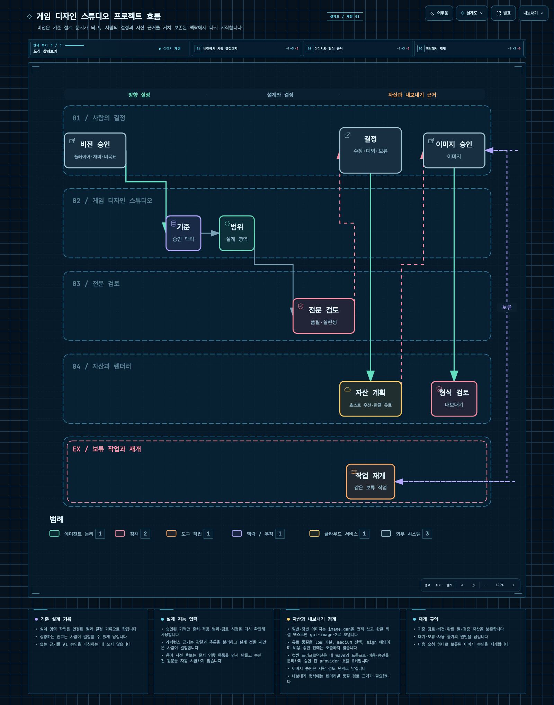
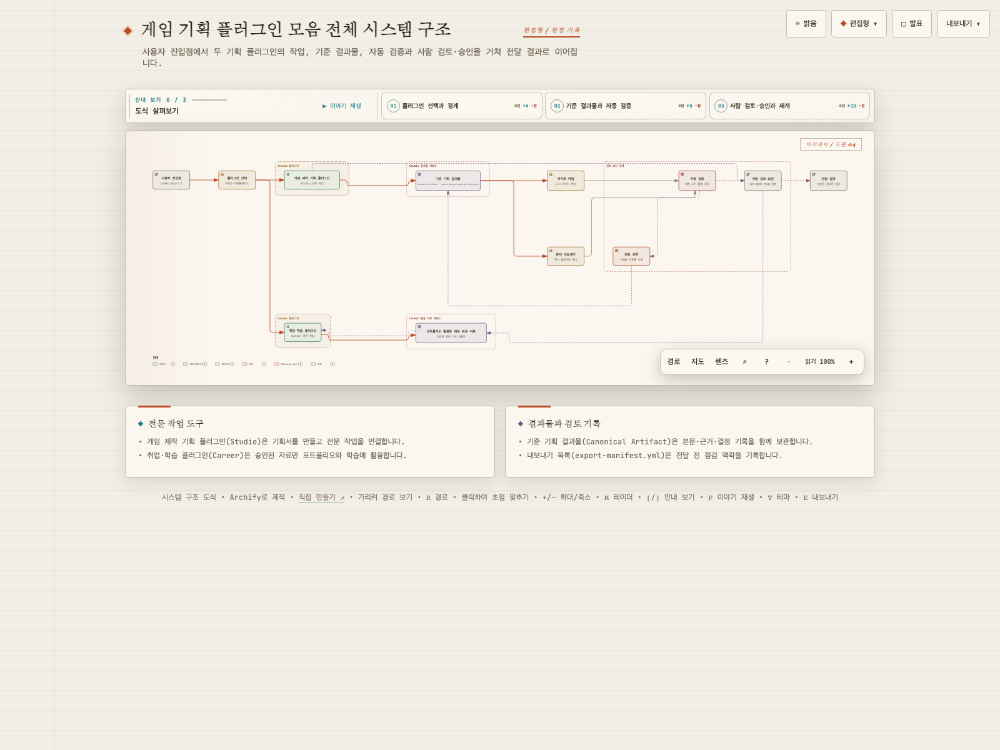
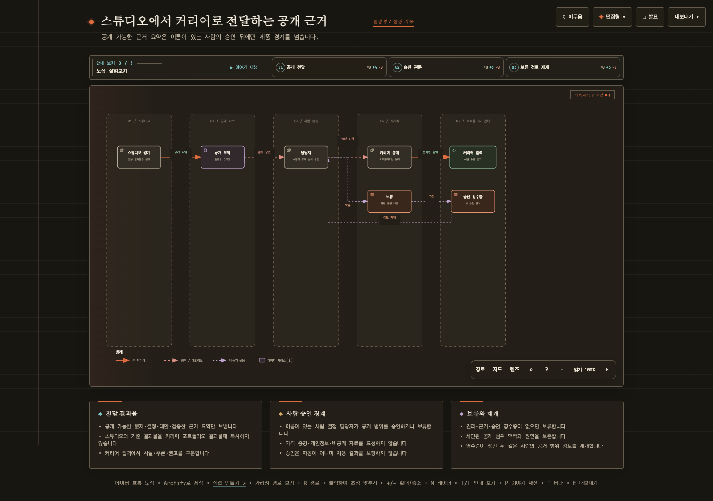

career-evidence-workflow
질문: Career에서 단계 진단과 근거 조사가 증거 프로젝트·포트폴리오·면접·성장으로 어떻게 연결되는가?
유형: workflow · 제품: career

질문: Career에서 단계 진단과 근거 조사가 증거 프로젝트·포트폴리오·면접·성장으로 어떻게 연결되는가?
유형: workflow · 제품: career
질문: Studio에서 비전부터 검토·자산·내보내기와 재개까지 어떤 책임 순서로 진행하는가?
유형: workflow · 제품: studio

질문: 사용자 진입점에서 두 기획 플러그인의 작업, 기준 기획 결과물, 자동 검증과 사람 검토·승인을 거쳐 결과가 어떻게 전달되는가?
유형: architecture · 제품: suite

질문: Studio 검토 결과에서 공개 가능한 evidence summary만 Career 포트폴리오로 어떻게 전달하고 승인·보류하는가?
유형: dataflow · 제품: suite
